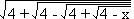
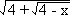
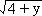
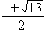

Solution to puzzle 88: Nested radicals
Solve the equation  = x.
(All square roots are to be taken as positive.)
Consider f(x) = .
Then f(f(x)) = = x.
A solution to f(x) = x, if it exists, will also be a solution to f(f(x)) = x.
Solving f(x) = x
Consider, then, f(x) = = x.
Let y = . Then y2 = 4 - x.
We also have x = , from which x2 = 4 + y.
Subtracting, we have x2 - y2 = x + y.
Hence (x + y)(x - y - 1) = 0.
Since x  0 and y
0 and y  0, x + y = 0
0, x + y = 0  x = 0, which does not satisfy f(x) = x.
x = 0, which does not satisfy f(x) = x.
Therefore we take x - y - 1 = 0, or y = x - 1.
Substituting into x2 = 4 + y, we obtain x2 = x + 3, or x2 - x - 3 = 0.
Rejecting the negative root, we have x = 
Proving uniqueness
We must now show that this is the only solution to f(f(x)) = x. This is necessary as f(f(x)) = x does not necessarily imply f(x) = x. (Consider f(x) = 4 - x.) That is, there may be other solutions for which f(x)  x.
x.
For any solution, since each square root is positive, we must have 0  x
x  4.
4.
Considering each nested radical in turn, from the innermost outwards, we see also that f(f(x)) is strictly increasing over this range.
We have also: f(f(0)) = 2.29 and f(f(4)) = 2.33, correct to two decimal places.
We conclude that the graph of y = f(f(x)), for 0  x
x  4, is almost a straight line, with average slope approximately 0.01.
4, is almost a straight line, with average slope approximately 0.01.
Since f(f(x)) is a continuous function, it follows that y = f(f(x)) intersects the line y = x, for 0  x
x  4.
4.
Furthermore, y = f(f(x) will intersect y = x precisely once, provided that no section of y = f(f(x)) has a slope greater than 1.
This is clearly the case, and may be verified, if necessary, by differentiating f(f(x)) with respect to x.
Therefore the only solution to = x, is x =
Remarks
If f is a strictly increasing function over a given range, then we can show that f(f(x)) = x  f(x) = x.
f(x) = x.
Suppose x0 is a solution to f(f(x)) = x.
If f(x0) < x0, then x0 = f(f(x0)) < f(x0) < x0, which is a contradiction.
Similarly, if f(x0) > x0, then x0 = f(f(x0)) > f(x0) > x0, which again is a contradiction.
We conclude that f(x0) = x0.
Alas, we cannot use this approach above, as f(x) = is a decreasing function.
Further reading
Source: Original